18 Scatter plots and smoothing lines
18.1 Introduction
Scatter plots - which are sometimes called bivariate plots - allow you to visualize the relationship between two numerical variables.
They are among the most commonly used plots because they can provide an immediate way to see how one numerical variable varies against another.
Scatter plots can also display multiple relationships by mapping additional variable to aesthetic properties, such as color of the points.
Trends and relationships in a scatter plot can be made clearer by adding a smoothing line over the points.
We will use ggplot to do all that and more. Let’s get started!
18.2 Learning Objectives
- You can visualize relationships between numerical variables using scatter plots with
geom_point(). - You can use
coloras an aesthetic argument to map variables from the dataset onto individual points. - You can change the size, shape, color, fill, and opacity of geometric objects by setting fixed aesthetics.
- You can add a trend line to a scatter plot with
geom_smooth().
18.3 Childhood diarrheal diseases in Mali
We will be using data collected for a prospective observational study of acute diarrhea in children aged 0-59 months. The study was conducted in Mali and in early 2020.
The full dataset can be obtained from Dryad, and the paper can be viewed here.
Vocab
A prospective study watches for outcomes, such as the development of a disease, during the study period and relates this to other factors such as suspected risk or protection factors.
Spend some time browsing through this dataset. Each row corresponds to one patient surveyed. There are demographic, physiological, clinical, socioeconomic, and geographic variables.
We will begin by visualizing the relationship between the following two numerical variables:
age_months: the patient’s age in months on the horizontal x-axis andviral_load: the patient’s viral load on the vertical y-axis
18.4 Scatter plots via geom_point()
We will explore relationships between some numerical variables in the malidd data frame.
We will now examine at and run the code that will create the desired scatter plot, while keeping in mind the GG framework. Let’s take a look at the code and break it down piece-by-piece.
Remember that we specify the first two GG layers as arguments (i.e., inputs) within the ggplot() function:
- We provide the
malidddata frame with thedataargument, by inputtingdata = malidd. - We define the variables to be plotted in the
aesthetics function of themappingargument, by inputtingmapping = aes(x = age_months, y = viral_load). Specifically, the variableage_monthsis mapped to thexaesthetic, while the variableviral_loadis mapped to theyaesthetic.
We then add the geom_*() function on a new layer with a + sign. The geometric objects (i.e., shapes) needed for a scatter plot are points, so we add geom_point().
After running the following lines of code, you’ll produce the scatter plot below:
## Simple scatter plot of viral load vs age
ggplot(data = malidd,
mapping = aes(x = age_months,
y = viral_load)) +
geom_point()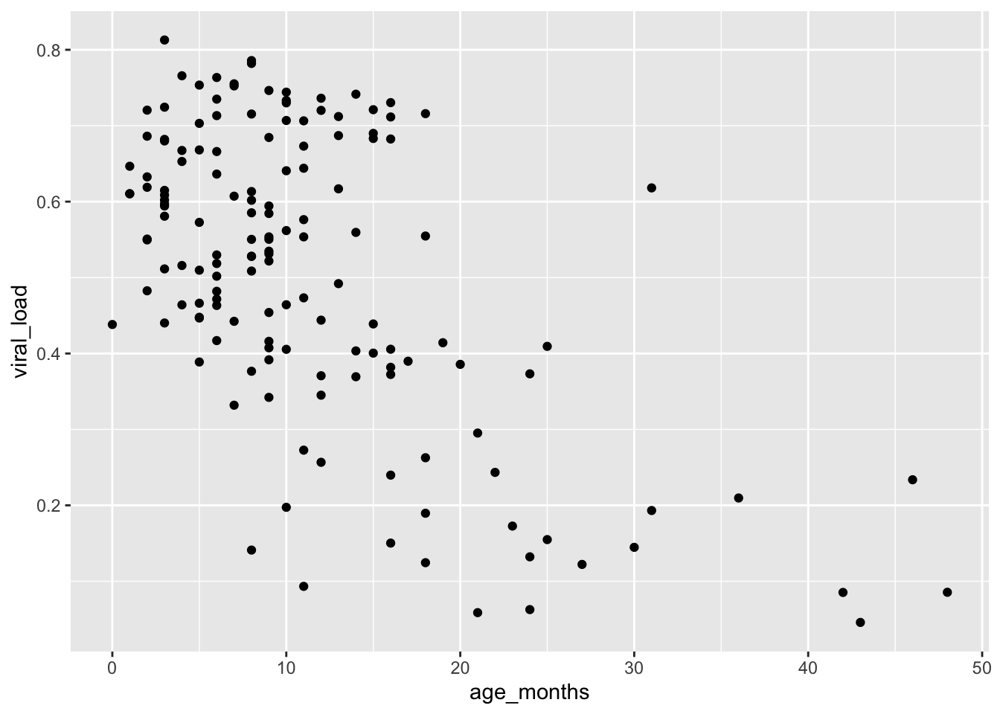
This suggests that viral load generally decreases with age.
Practice
- Using the
malidddata frame, create a scatter plot showing the relationship between age and height (height_cm).
18.5 Aesthetic modifications
An aesthetic is a visual property of the geometric objects (geoms) in your plot. Aesthetics include things like the size, the shape, or the color of your points. You can display a point in different ways by changing the values of its aesthetic properties.
Remember, there are two methods for changing the aesthetic properties of your geoms (in this case, points).
You can convey information about your data by mapping the variables in your dataset to aesthetics in your plot. For this method, you use
aes()in themappingargument to associate the name of the aesthetic with a variable to display.You can also set the aesthetic properties of your
geoms manually. Here the aesthetic doesn’t convey information about a variable, but only changes the appearance of the plot. To change an aesthetic manually, you set the aesthetic by name as an argument of yourgeom_*()function; i.e. it goes outside ofaes().
18.5.1 Mapping data to aesthetics
In addition to mapping variables to the x and y axes like with did above, variables can be mapped to the color, shape, size, opacity, and other visual characteristics of geoms. This allows groups of observations to be superimposed in a single graph.
To map a variable to an aesthetic, associate the name of the aesthetic to the name of the variable inside aes(). This way, we can visualize a third variable to our simple two dimensional scatter plot by mapping it to a new aesthetic.
For example, let’s map height_cm to the colors of our points, to show us how height varies with age and viral load:
ggplot(data = malidd,
mapping = aes(x = age_months,
y = viral_load)) +
geom_point(mapping = aes(color = height_cm))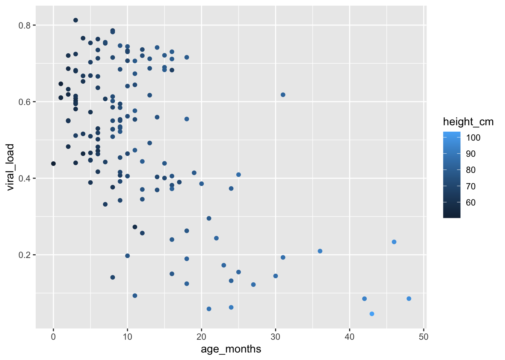
We see that {ggplot2} has automatically assigned the values of our variable to an aesthetic, a process known as scaling. {ggplot2} will also add a legend that explains which levels correspond to which values.
Here the points are colored by different shades of the same blue hue, with darker colors representing lower values.
This shows us that height increases with age, as expected.
Instead of a continuous variable like height_cm, we can also map a binary variable like breastfeeding, to show us the which children are breastfed and which ones are not:
ggplot(data = malidd,
mapping = aes(x = age_months,
y = viral_load)) +
geom_point(mapping = aes(color = breastfeeding))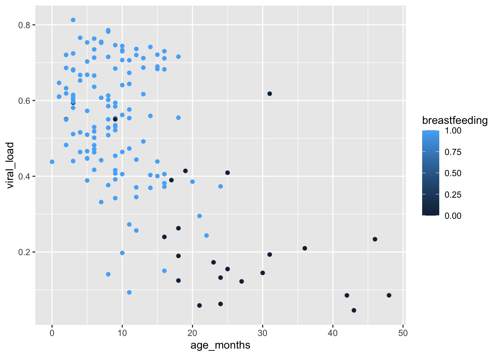
We get the same gradual color scaling like with did with height. This communicates a continuum of values, rather than the two distinct values in our variable - 0 or 1.
This is because of the data class of the breastfeeding variable in malidd:
class(malidd$breastfeeding)[1] "numeric"But even though binary variables are numerical, they represent two discrete possibilities. So the continuous color scaling in the plot above is not ideal.
In cases like this, we add the function factor() around the breastfeeding variable to tell ggplot() to treat the variable as a factor. Let’s see what happens when we do that:
ggplot(data = malidd,
mapping = aes(x = age_months,
y = viral_load)) +
geom_point(mapping = aes(color = factor(breastfeeding)))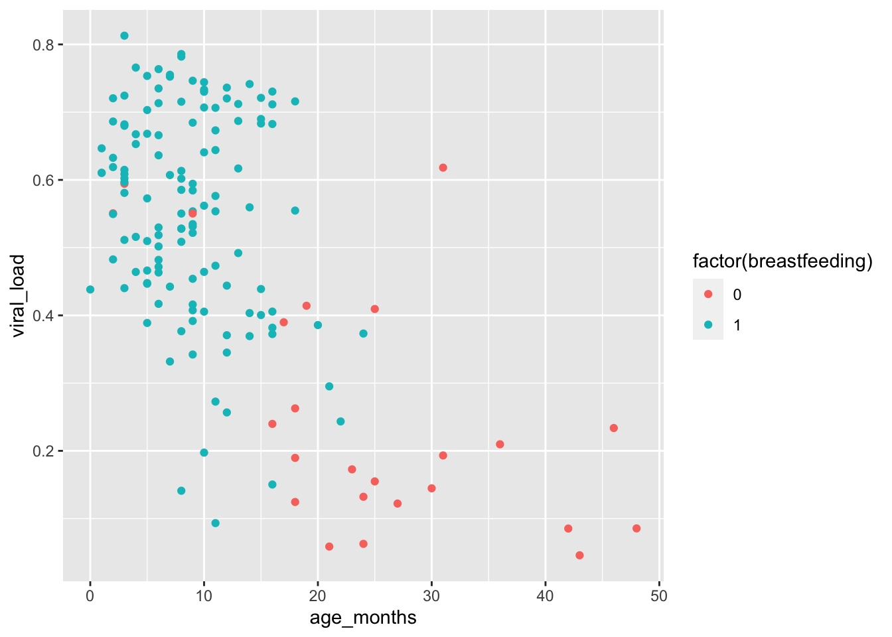
When the variable is treated like a factor, the colors chosen are clearly distinguishable. With factors, {ggplot2} will automatically assign a unique level of the aesthetic (here a unique color) to each unique value of the variable. (this is what happened with the region variable of the nigerm dataframe that we use in the last lesson)
This plot reveals a clear relationship between age and breastfeeding, as we might expect. Children are likely to stop breastfeeding around 20 months of age. In this study, no child at or above 25 months was being breastfed.
Adding colors to the scatter plot allowed us to visualize a third variable in addition to the relationship between age and viral load. The third variable could be either discrete or continuous.
Practice
Using the
malidddata frame, create a scatter plot showing the relationship between age and viral load, and map a third variable,freqrespi, to color:Create the same age vs. height scatterplot again, but this time, map the binary variable
feverto the color of the points. Keep in mind thatfevershould be treated as a factor.
## Type and view your answer:
age_height_fever <- "YOUR ANSWER HERE"
age_height_fever18.5.2 Setting fixed aesthetics
Aesthetic arguments set to a fixed value will be static, and the visual effect is not data-dependent. To add a fixed aesthetic, we add as a direct argument of the geom_*() function; i.e., it goes outside of mapping = aes().
Let’s look at some of the aesthetic arguments we can place directly within geom_point() to make visual changes to the points in our scatter plot:
color- point color or point outline colorsize- point sizealpha- point opacityshape- point shapefill- point fill color (only applies if the point has an outline)
To use these options to create a more attractive scatter plot, you’ll need to pick a value for each argument that makes sense for that aesthetic, as shown in the examples below.
18.5.2.1 Changing color, size and alpha
Let’s change the color of the points to a fixed value by setting the color argument directly within geom_point(). The color we choose must be a character string that R recognizes as a color. Here we will set the point colors to steel blue:
## Modify original scatter plot by setting `color = "steelblue"`
ggplot(data = malidd,
mapping = aes(x = age_months,
y = viral_load)) +
geom_point(color = "steelblue") # set color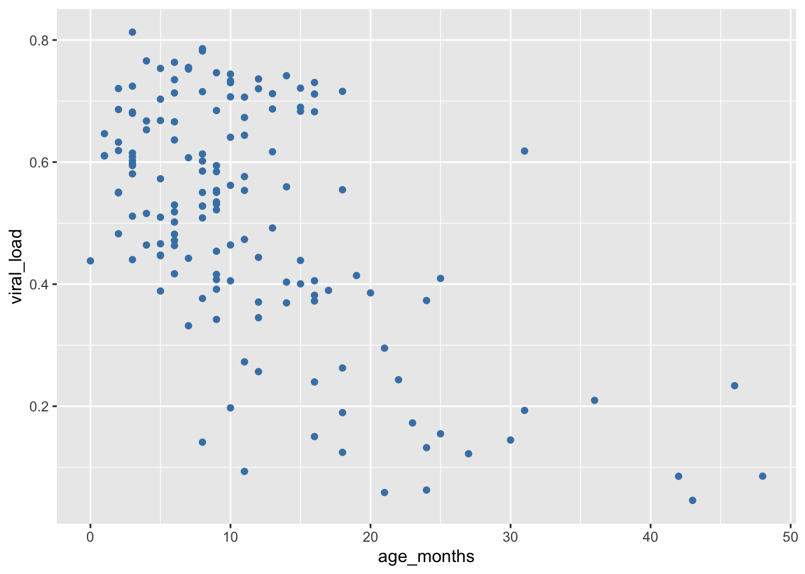
In addition to changing the default color, now we will modify the size aesthetic of the points by assigning it to a fixed number (in millimeters). The default size is 1 mm, so let’s chose a larger value:
## Set size to 2 mm by ading `size = 2`
ggplot(data = malidd,
mapping = aes(x = age_months,
y = viral_load)) +
geom_point(color = "steelblue", # set color
size = 2) # set size (mm)The alpha aesthetic controls the level of opacity of geoms. alpha is also numerical, and ranges from 0 (completely transparent) to the default of 1 (completely opaque). Let’s make our points more transparent by reducing the opacity:
## Set opacity to 75% by adding `alpha = 0.75`
ggplot(data = malidd,
mapping = aes(x = age_months,
y = viral_load)) +
geom_point(color = "steelblue", # set color
size = 2, # set size (mm)
alpha = 0.75) # set level of opacity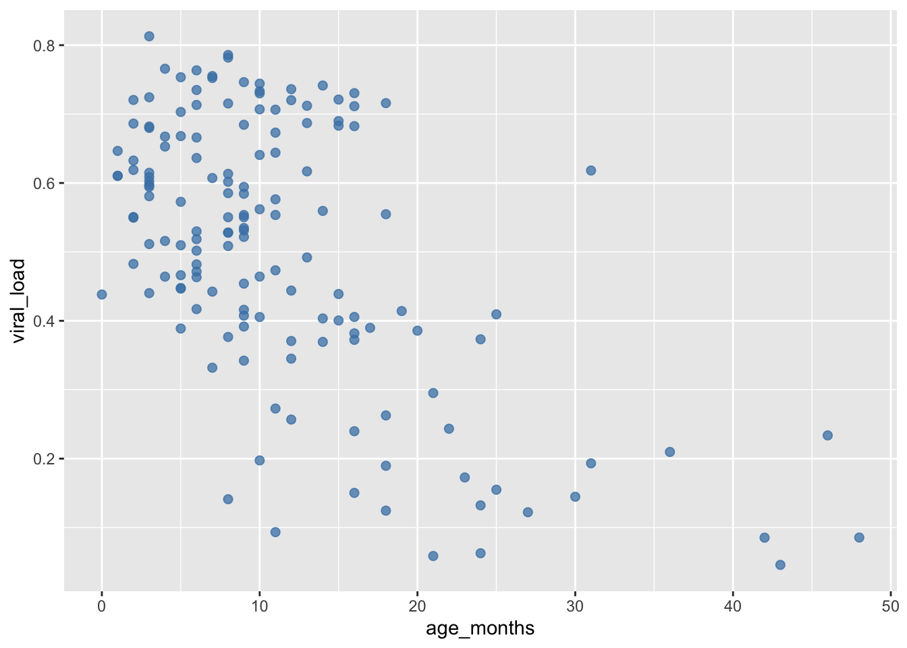
Now we can see where multiple points overlap. This is a useful parameter for scatter plots where there is overplotting.
Remember, changing the color, size, or opacity of our points here is not conveying any information in the data - they are design choices we make to create prettier plots.
Practice
- Create a scatter plot with the same variables as the previous example, but change the color of the points to
cornflowerblue, increase the size of points to 3 mm and set the opacity to 60%.
18.5.2.2 Changing shape and fill
We can change the appearance of points in a scatter plot with the shape aesthetic.
To change the shape of your geoms to a fixed value, set shape equal to a number corresponding to your desired shape.
{ggplot2} will accept the following numbers:
 Notice that some of the shapes are filled in with red. This indicates that objects 21-24 are sensitive to both
Notice that some of the shapes are filled in with red. This indicates that objects 21-24 are sensitive to both color and fill, but the others are only sensitive to color.
First let’s modify our original scatterplot by changing the shapes to a something that can be filled in:
## Set shape to fillable circles by adding `shape = 21`
ggplot(data = malidd,
mapping = aes(x = age_months,
y = viral_load)) +
geom_point(shape = 21) # set shapes to display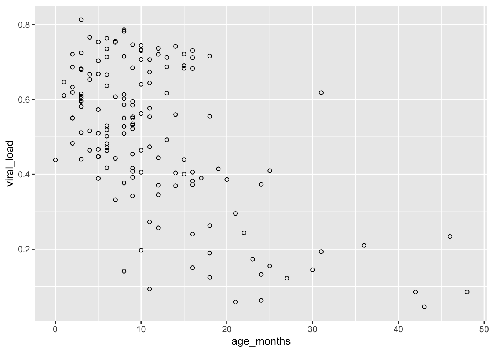
Fillable shapes can have different colors for the outline and interior. Changing the color aesthetic will only change the outline of our points:
## Set outline color of the shapes by adding `color = cyan4`
ggplot(data = malidd,
mapping = aes(x = age_months,
y = viral_load)) +
geom_point(shape = 21, # set shapes to display
color = "cyan4") # set outline color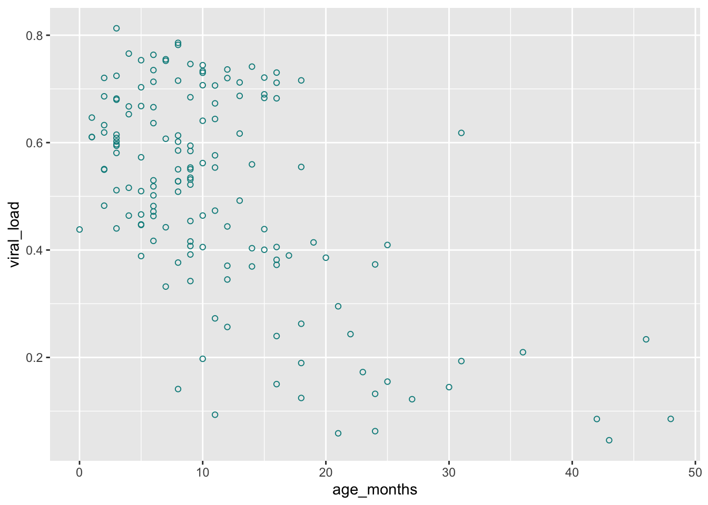
Now let’s fill in the points:
## Set interior color of the shapes by adding `fill = "seagreen"`
ggplot(data = malidd,
mapping = aes(x = age_months,
y = viral_load)) +
geom_point(shape = 21, # set shapes to display
color = "cyan4", # set outline color
fill = "seagreen") # set fill color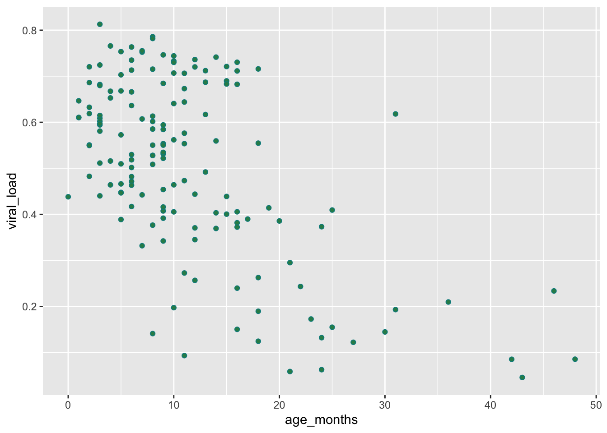
We can improve the readability by increasing size and reducing opcaity with size and alpha, like we did before:
ggplot(data = malidd,
mapping = aes(x = age_months,
y = viral_load)) +
geom_point(shape = 21, # set shapes to display
color = "cyan4", # set outline color
fill = "seagreen", # set fill color
size = 2, # set size (mm)
alpha = 0.75) # set level of opacity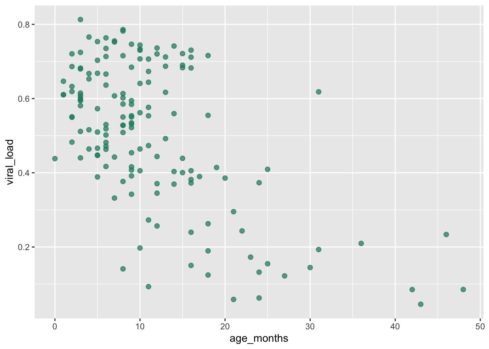
18.6 Adding a trend line
It can be hard to view relationships or trends with just points alone. Often we want to add a smoothing line in order to see what the trends look like. This can be especially helpful when trying to understand regressions.
To get a better idea of the relationship between these to variables, we can add a trend line (also known as a best fit line or a smoothing line).
To do this, we add the function geom_smooth() to our scatter plot:
ggplot(data = malidd,
mapping = aes(x = age_months,
y = viral_load)) +
geom_point() +
geom_smooth()`geom_smooth()` using method = 'loess' and formula = 'y ~ x'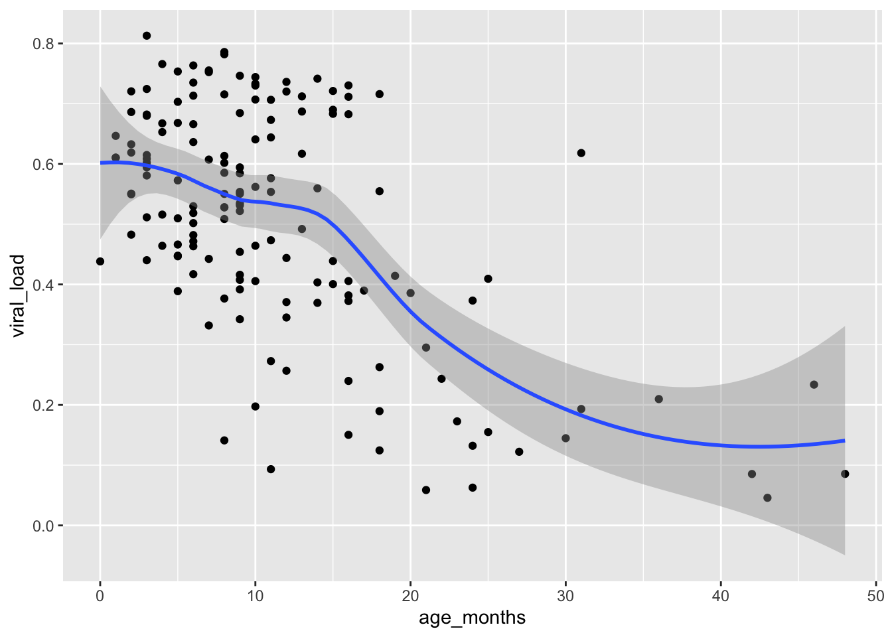
The smoothing line comes after our points an another geometric layer added onto our plot.
The default smoothing function used in this scatter plot is “loess” which stands for for locally weighted scatter plot smoothing. Loess smoothing is a process used by many statistical softwares. In {ggplot2} this generally should be done when you have less than 1000 points, otherwise it can be time consuming.
Many other smoothing functions can also be used in geom_smooth().
Let’s request a linear regression method. This time we will use a generalized linear model by setting the method argument inside geom_smooth():
## Change to a linear smoothing function with `method = "glm"`
ggplot(data = malidd,
mapping = aes(x = age_months,
y = viral_load)) +
geom_point() +
geom_smooth(method = "glm")`geom_smooth()` using formula = 'y ~ x'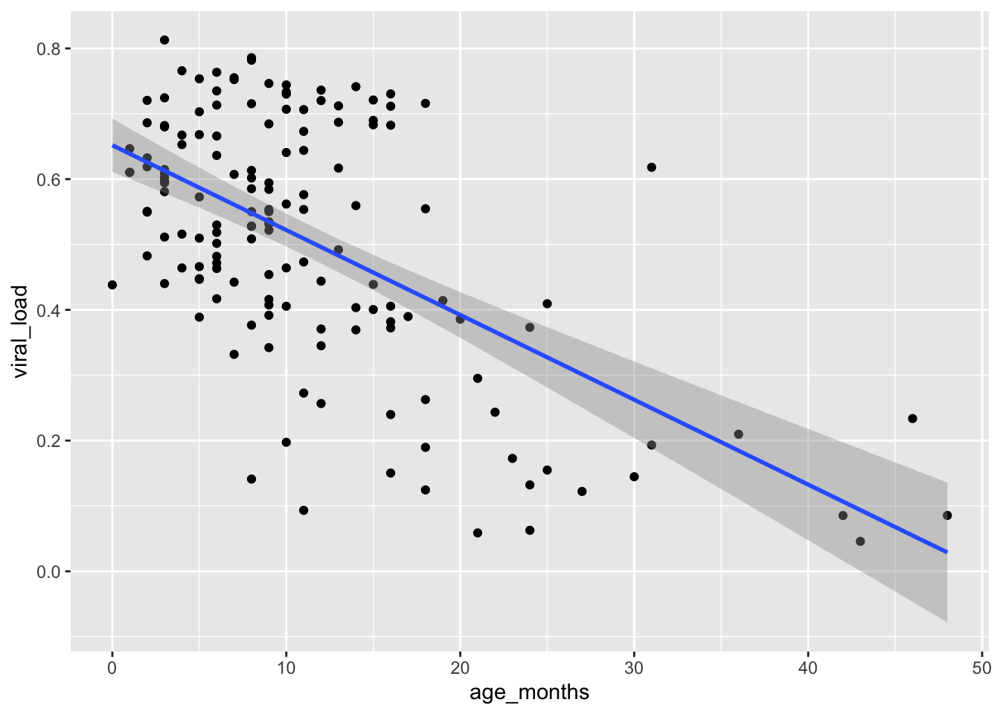
By default, 95% confidence limits for these lines are displayed.
You can suppress the confidence bands by including the argument se = FALSE inside geom_smooth():
## Remove confidence interval bands by adding `se = FALSE`
ggplot(data = malidd,
mapping = aes(x = age_months,
y = viral_load)) +
geom_point() +
geom_smooth(method = "glm",
se = FALSE)`geom_smooth()` using formula = 'y ~ x'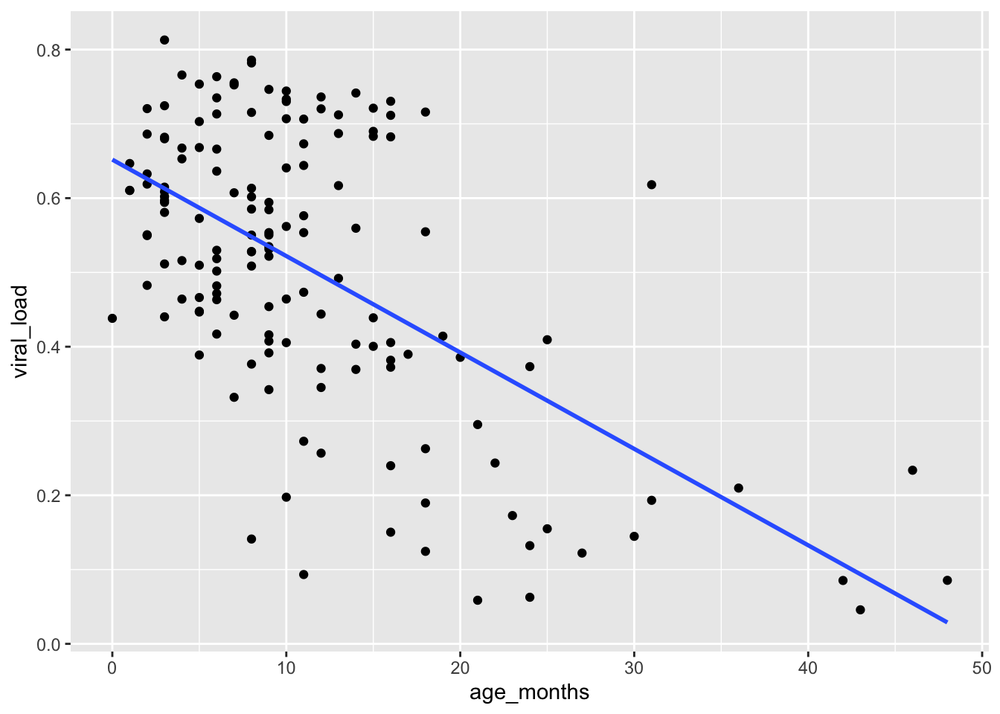
In addition to changing the method, let’s add the color argument inside geom_smooth() to change the color of the line.
## Change the color of the trend line by adding `color = "darkred"`
ggplot(data = malidd,
mapping = aes(x = age_months,
y = viral_load)) +
geom_point() +
geom_smooth(method = "glm",
se = FALSE,
color = "darkred")`geom_smooth()` using formula = 'y ~ x'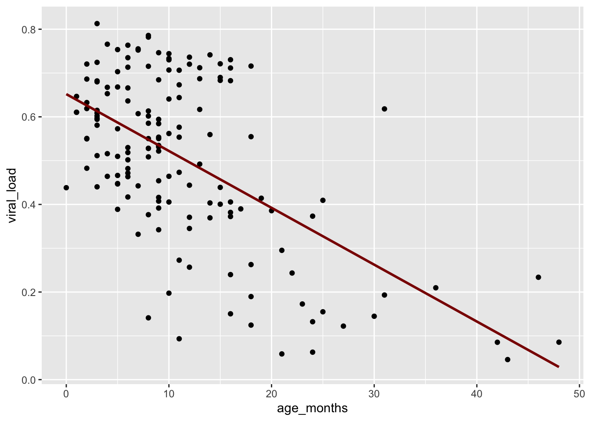
This linear regression concurs with what we initially observed in the first scatter plot. A negative relationship exists between age_months and viral_load: as age increases, viral load tends to decrease.
Let’s add a third variable from the malidd dataset calledvomit. This which is a binary variable that records whether or not the patient vomited. We will add the vomit variable to the plot by mapping it to the color aesthetic. We will again change the smoothing method to generalized additive model (“gam”) and make some aesthetic modifications to the line in the geom_smooth() layer.
ggplot(data = malidd,
mapping = aes(x = age_months,
y = viral_load)) +
geom_point(mapping = aes(color = factor(vomit))) +
geom_smooth(method = "gam",
size = 1.5,
color = "darkgray")Warning: Using `size` aesthetic for lines was deprecated in ggplot2 3.4.0.
ℹ Please use `linewidth` instead.`geom_smooth()` using formula = 'y ~ s(x, bs = "cs")'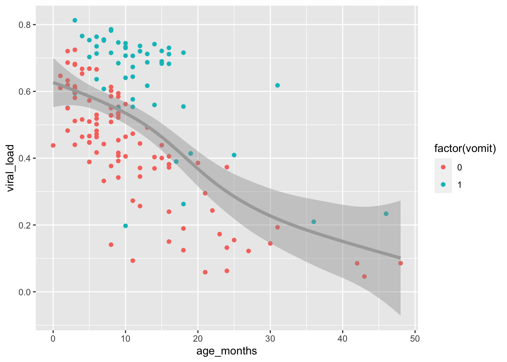
Observe the distribution of blue points (children who vomited) compared to red points (children who did not vomit). The blue points mostly occur above the trend line. This shows that higher viral loads were not only associated with younger children, but that children with higher viral loads were more likely to exhibit symptoms of vomiting.
Practice
Create a scatter plot with the
age_monthsandheight_cmvariables. Set the color of the points to “steelblue”, the size to 2.5mm, the opacity to 80%. Then add trend line with the smoothing method “lm” (linear model). To make the trend line stand out, set its color to “indianred3”.Recreate the plot you made in the previous question, but this time adapt the code to change the shape of the points to tilted rectangles (number 23), and add the body temperature variable (
temp) by mapping it to fill color of the points.
## Type and view your answer:
age_height_3 <- "YOUR ANSWER HERE"
age_height_318.7 Summary
Scatter plots display the relationship between two numerical variables.
With medium to large datasets, you may need to play around with the different modifications to scatter plots we saw such as adding trend lines, changing the color, size, shape, fill, or opacity of the points. This tweaking is often a fun part of data visualization, since you’ll have the chance to see different relationships emerge as you tinker with your plots.
References
Some material in this lesson was adapted from the following sources:
- Ismay, Chester, and Albert Y. Kim. 2022. A ModernDive into R and the Tidyverse. https://moderndive.com/.
- Kabacoff, Rob. 2020. Data Visualization with R. https://rkabacoff.github.io/datavis/.
- Giroux-Bougard, Xavier, Maxwell Farrell, Amanda Winegardner, Étienne Low-Decarie and Monica Granados. 2020. Workshop 3: Introduction to Data Visualisation with {ggplot2}. http://r.qcbs.ca/workshop03/book-en/.
18.8 Solutions
.SOLUTION_age_height()ggplot(data = malidd,
mapping = aes(x = age_months,
y = height_cm)) +
geom_point().SOLUTION_age_height_respi()ggplot(data = malidd,
mapping = aes(x = age_months,
y = viral_load)) +
geom_point(mapping = aes(color = freqrespi)).SOLUTION_age_viral_respi() ggplot(data = malidd,
mapping = aes(x = age_months,
y = viral_load)) +
geom_point(mapping = aes(color = freqrespi)).SOLUTION_age_height_fever()ggplot(data = malidd,
mapping = aes(x = age_months,
y = height_cm)) +
geom_point(mapping = aes(color = factor(fever))).SOLUTION_age_viral_blue()ggplot(data = malidd,
mapping = aes(x = age_months,
y = viral_load)) +
geom_point(color = "cornflowerblue",
size = 3,
alpha = 0.6).SOLUTION_age_height_2()ggplot(data = malidd,
mapping = aes(x = age_months,
y = height_cm)) +
geom_point(color = "steelblue",
size = 2.5,
alpha = 0.8) +
geom_smooth(method = "lm", color = "indianred3").SOLUTION_age_height_3()ggplot(data = malidd,
mapping = aes(x = age_months, y = height_cm)) +
geom_point(color = "steelblue",
size = 2.5,
alpha = 0.8,
shape = 23,
mapping = aes(fill = temp)) +
geom_smooth(method = "lm", color = "indianred3")This work is licensed under the Creative Commons Attribution Share Alike license.